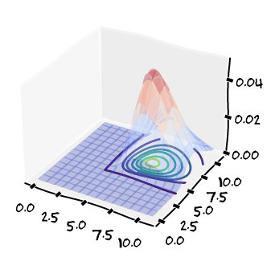

Equipo JAR (Julieta, José, Alonso, Rebe)
Para no caer en un problema lineal consideramos funciones de calificación no-lineales.
Por ejemplo: Peso de parciales depende de si es el más alto o bajo
\[ \frac{1}{5} p_{\text{lo}} + \frac{2}{5} \left( \sum_{i} p_{i} \right) + \frac{2}{5} y \]
donde \(y\) representa el examen final, \(p_{\text{lo}}\) el parcial más bajo, y así.
Asumiendo que las calificaciones se distribuyen gamma
